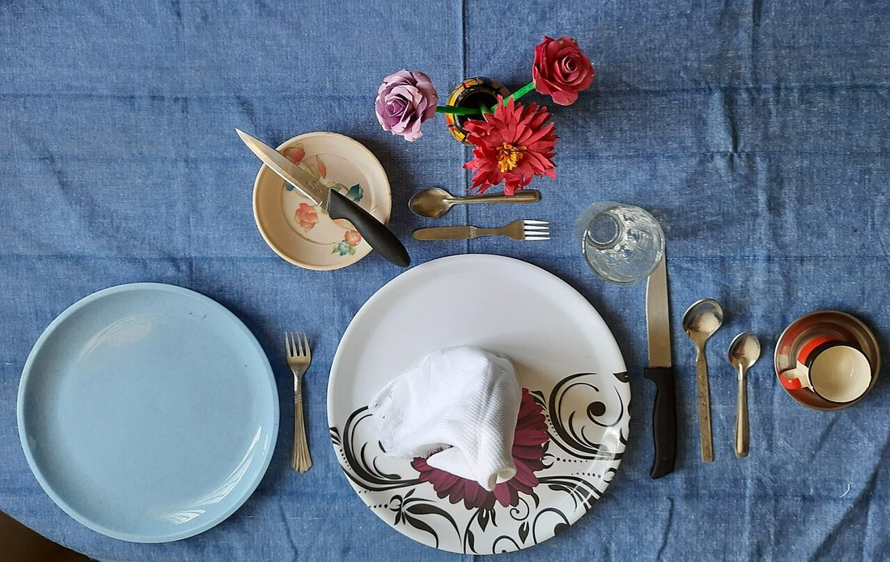
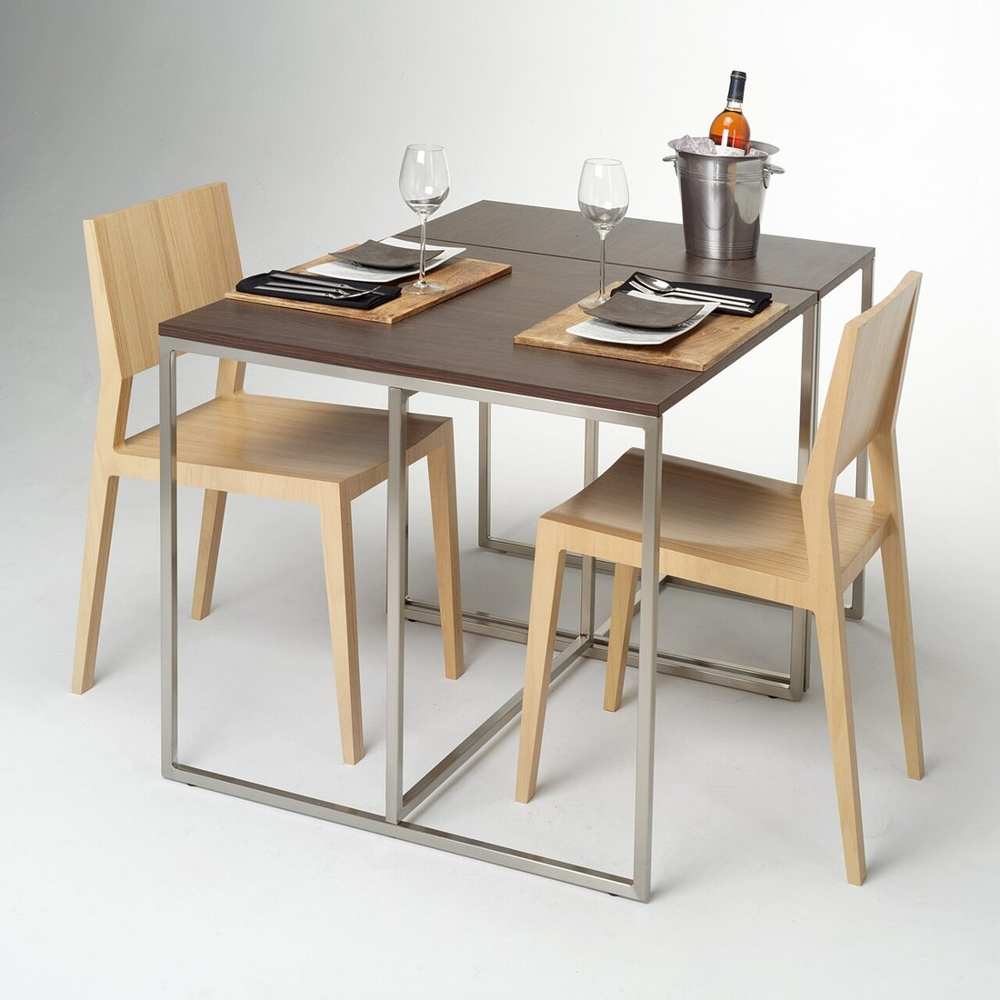
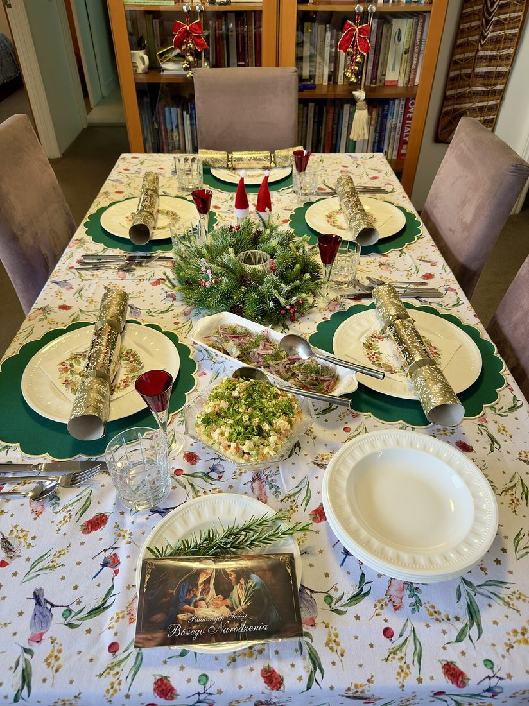
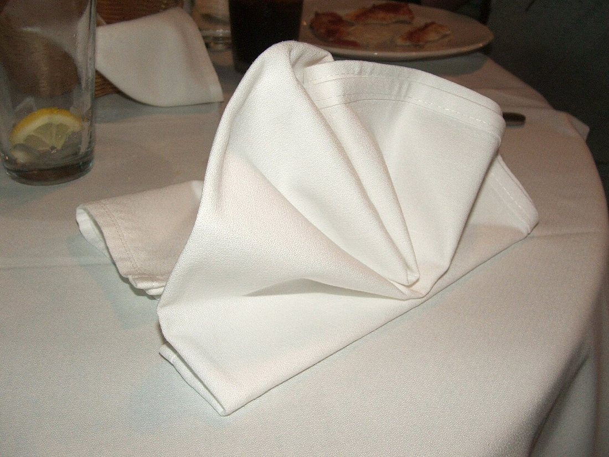

Көркем еңбек · 4-бөлім · Тағамтану мәдениеті Art & Craft · Section 4 · Food Culture Художественный труд · Раздел 4 · Культура питания
🍽️ Дастархан жасау және ас үстеліндегі әдеп
🍽️ Table Setting & Dining Etiquette
🍽️ Сервировка стола и столовый этикет
Үстелді әдемі әрі дұрыс жасау, аспап-ыдысты орналастыру және сыпайы тамақтану ережелері. How to lay a table beautifully and correctly, place the tableware, and dine politely. Как красиво и правильно накрыть стол, разложить приборы и вести себя за столом.
Сервировка (дастархан жасау) — үстелге ыдыс, аспап және сәнді бұйымдарды белгілі тәртіппен қою. Дұрыс сервировка тек әдемілік үшін емес: ол тамақтануды ыңғайлы әрі гигиеналық етеді, әр аспаптың өз орны мен өз қызметі болады. Әдеп (этикет) — үстел басындағы мінез-құлық ережелері: олар адамдарға бір-бірін сыйлап, жайлы отыруға көмектеседі. Әдемі дастархан мен сыпайы мінез — қонақжайлықтың және үй мәдениетінің көрсеткіші. Table setting means arranging dishes, cutlery and decorations on the table in a set order. A correct setting is not only beautiful: it makes eating comfortable and hygienic, and every item has its own place and purpose. Etiquette is the set of rules of behaviour at the table; they help people respect one another and feel at ease. A well-laid table and polite manners are signs of hospitality and a cultured home. Сервировка — это расстановка на столе посуды, приборов и украшений в определённом порядке. Правильная сервировка не только красива: она делает еду удобной и гигиеничной, у каждого предмета своё место и назначение. Этикет — это правила поведения за столом; они помогают людям уважать друг друга и чувствовать себя свободно. Красиво накрытый стол и вежливые манеры — признак гостеприимства и культуры дома.
Бір адамға арналған орын: схема One Place Setting: the Scheme Сервировка одного места: схема
Аспаптарды сырттан ішке қарай қолданады: әр тағамға — өз аспабы. Use the cutlery from the outside in: each course has its own piece. Приборы используют снаружи внутрь: для каждого блюда — свой прибор.
Сервировканың негізгі ережелері Key Rules of Table Setting Главные правила сервировки
Таза дастархан.A clean cloth.Чистая скатерть. Алдымен үтіктелген таза дастархан төсейді; астына жұмсақ төсеме қоюға болады.First lay a clean, ironed tablecloth; a soft underlay may go beneath it.Сначала стелют чистую выглаженную скатерть; под неё можно положить мягкую подложку.
Шанышқы — солға, пышақ пен қасық — оңға.Forks left, knife and spoon right.Вилки — слева, нож и ложка — справа. Пышақтың жүзі әрқашан тәрелкеге қарайды.The knife blade always faces the plate.Лезвие ножа всегда обращено к тарелке.
Сырттан ішке.Outside in.Снаружи внутрь. Аспаптарды тағам кезегімен қояды: ең шеткісі — алғашқы тағамға.Cutlery is placed in course order: the outermost is for the first course.Приборы кладут по порядку блюд: крайний — для первого блюда.
Стақан — оң жақ жоғарыда.Glass upper right.Стакан — справа вверху. Су мен сусын ыдысын пышақтың ұшынан жоғары қояды.Water and drink glasses go above the tip of the knife.Стакан для воды и напитков ставят над кончиком ножа.
Майлық.The napkin.Салфетка. Майлықты тәрелкеге не сол жаққа қояды; әдемі бүктесе — сәнді көрінеді.Place the napkin on the plate or to the left; a neat fold looks elegant.Салфетку кладут на тарелку или слева; красиво сложенная выглядит нарядно.
Сәндік әшекей.A decorative touch.Украшение. Үстел ортасына гүл не шам қоюға болады — бірақ ол көрінуге кедергі болмауы керек.Flowers or a candle may go in the centre — but they must not block the view.В центр можно поставить цветы или свечу — но они не должны мешать видеть друг друга.
Жасалған үстелдер: мысалдар Laid Tables: Examples Накрытые столы: примеры
🔍 Үлкейту үшін суретті басыңыз. 🔍 Tap a photo to enlarge. 🔍 Нажмите на фото, чтобы увеличить.




Ас үстеліндегі әдеп: болады / болмайды Dining Etiquette: Do & Don't Столовый этикет: можно / нельзя
| Ситуация | ✔ Как правильно | ✘ Чего избегать |
|---|---|---|
| Салфетка | Положить на колени; уголком промокать губы. | Засовывать за воротник, вытирать ею лицо и руки. |
| Осанка и локти | Сидеть прямо, кисти у края стола. | Ставить локти на стол, разваливаться на стуле. |
| Приборы | Брать снаружи внутрь; держать вилку в левой, нож в правой. | Размахивать приборами, облизывать нож. |
| Во время еды | Жевать с закрытым ртом, есть бесшумно. | Чавкать, говорить с полным ртом, дуть на горячее. |
| Просьба | Вежливо попросить передать блюдо. | Тянуться через весь стол за едой. |
| Окончание еды | Положить приборы параллельно на тарелку. | Вставать из-за стола, не поблагодарив хозяев. |
| Жағдай | ✔ Дұрысы | ✘ Болмайтыны |
|---|---|---|
| Майлық | Тізеге қою; ұшымен ерінді сүрту. | Жағаға қыстыру, бетті-қолды сүрту. |
| Қалып, шынтақ | Тік отыру, қолды үстел шетіне қою. | Шынтақты үстелге қою, орындыққа жайылу. |
| Аспаптар | Сырттан ішке алу; шанышқы — солда, пышақ — оңда. | Аспапты сермеу, пышақты жалау. |
| Тамақ кезінде | Аузды жауып шайнау, үнсіз жеу. | Шапылдату, аузы толы сөйлеу, ыстыққа үрлеу. |
| Өтініш | Тағамды сыпайы сұрап беруді өтіну. | Үстел арқылы созылып алу. |
| Тамақ соңы | Аспаптарды тәрелкеге қатар қою. | Алғыс айтпай үстелден тұру. |
| Situation | ✔ The right way | ✘ Avoid |
|---|---|---|
| Napkin | Put it on your lap; dab your lips with a corner. | Tucking it into the collar, wiping face and hands with it. |
| Posture & elbows | Sit upright, hands at the table edge. | Resting elbows on the table, slumping in the chair. |
| Cutlery | Take it outside in; fork in the left hand, knife in the right. | Waving cutlery about, licking the knife. |
| While eating | Chew with your mouth closed, eat quietly. | Smacking, talking with a full mouth, blowing on hot food. |
| Asking | Politely ask for a dish to be passed. | Reaching across the whole table for food. |
| Finishing | Lay the cutlery parallel on the plate. | Leaving the table without thanking the hosts. |
Аспап тілі: «дайын» белгісі Cutlery Language: the «Finished» Sign Язык приборов: знак «я закончил»
⏸️ ҮзілісA pauseПауза
Әлі жеп жатсаңыз — пышақ пен шанышқыны тәрелкеге «^» (үй) тәрізді қиғаш қойыңыз.Still eating — rest knife and fork crossed like a roof «^» on the plate.Ещё едите — положите нож и вилку «домиком» (крест-накрест) на тарелке.
✅ БіттіFinishedЗакончил
Бітірдіңіз — пышақ пен шанышқыны қатар, тәрелкеде сағат тілінің «4-сағат» бағытында қойыңыз.Done — place knife and fork parallel, pointing to about «4 o'clock» on the plate.Закончили — положите нож и вилку параллельно, на «4 часа» на тарелке.
Бұл белгілерді бүкіл әлемде түсінеді: даяшы не үй иесі сөзсіз-ақ ыдысты алу не алмауды біледі. These signs are understood worldwide: a waiter or host knows without a word whether to clear your plate. Эти знаки понимают во всём мире: официант или хозяин без слов поймёт, убирать тарелку или нет.
Әр аспаптың қызметі What Each Item Is For Назначение приборов
негізгі тағам, салатmain course, saladвторое, салат
кесу, тек оң қолдаcutting, right hand onlyрезать, в правой руке
сорпа, десертsoup, dessertсуп, десерт
негізгі, терең, нанdinner, soup, breadстоловая, суповая, хлеб
су, сусынwater, drinksвода, напитки
тазалық, сәнhygiene, decorгигиена, украшение
💬 Есте сақтаңыз 💬 Remember 💬 Запомните
Сервировканың алтын ережесі қарапайым: шанышқы — солға, пышақ пен қасық — оңға, аспаптар сырттан ішке. Әдемі дастархан тамаққа құрмет көрсетеді, ал сыпайы әдеп — айналаңдағыларға. Үстел басындағы мәдениет — үлкен қонақжайлықтың кішкентай, бірақ маңызды бөлігі. The golden rule of table setting is simple: forks on the left, knife and spoon on the right, cutlery from the outside in. A beautiful table shows respect for the food, and polite manners show respect for the people around you. Good behaviour at the table is a small but important part of true hospitality. Золотое правило сервировки простое: вилки — слева, нож и ложка — справа, приборы — снаружи внутрь. Красивый стол выражает уважение к еде, а вежливые манеры — уважение к окружающим. Культура за столом — маленькая, но важная часть настоящего гостеприимства.